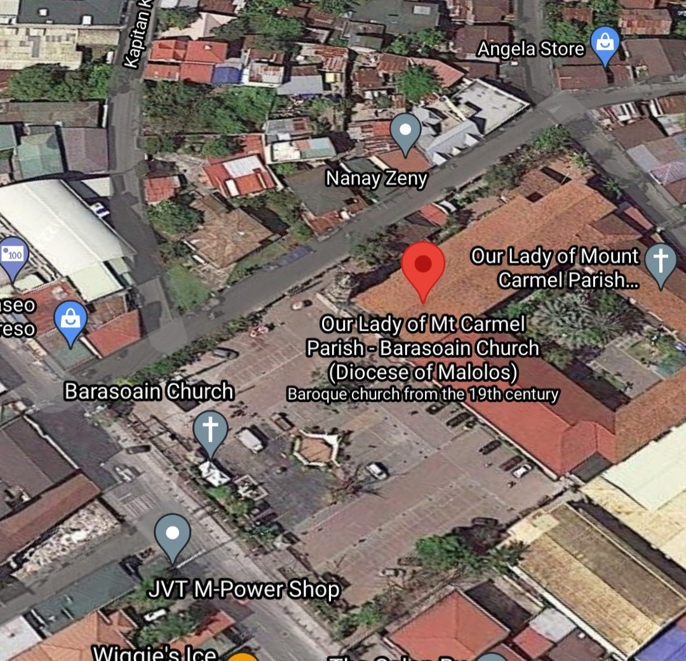

About
Hello, Welcome to unofficial site of Our Lady of Mt Carmel Parish also know as Barasoain church located at Malolos city province of (Bulacan).
This site contains historical events and informations about Our Lady of Mt Carmel Parish.
© Credit to owner of the picture
History
Barasoain Church's history began when the town of Barasoain, along with the town of Santa Isabel, was split from the town of Malolos in 1859. Don Alejandro Valenzuela was the first gobernadorcillo of the new town. With this splitting, a church was built to cater the needs of the residents. Barasoain Church began as a chapel built by Augustinian missionaries in 1859 with Fr. Fray F. Arriola as the first parish priest. With a stone church yet to be built, the space in patheon of Casa Tribunal (now known as Casa Real de Malolos) was used located near the bridge in the road leading to Malolos Basilica. In 1860, the church made of nipa and bamboo was made in the site that will become as the present-day church's plaza. In 1862, funds were raised to begin constructing a stone church.
In 1863, the convent made of stones and bricks was constructed in Camino Real (now Paseo del Congreso) and Calle Republika (now Don Antonio Bautista Street). Fr. Emiterio Ruperas succeeded Fr. Arriola in 1871 until a new parish priest arrived (which will be Fr. Francisco Royo), it was during his time that one of the existing church bells (bearing the year 1870) was given by the town of Malolos and was dedicated to Our Lady of Mount Carmel. Fr. Francisco Royo was succeeded by Fr. Juan Giron in 1879. In 1880, a strong earthquake caused the bell tower and the roof to collapse; it was later replaced. In 1884, a large fire that started in Liang destroyed the church for the second time. In 1885, the present church made of concrete stone and adobe was constructed. It was spearheaded by Fr. Juan Giron with Miguel Magpayo as the lead constructor for the project. In 1889, Fr. Martin Arconada rebuilt the bell tower and repaired the convent. With the arrival of Filipino priests, the church underwent massive changes especially the facade. The facade was replaced and the image of Christ the King is installed as if it is overlooking the entire parish to defend it. A cement floor was installed for the people to climb to it.
©Credits to owner of the picture
Location
Our Lady of Mt Carmel Parish - Barasoain Church (Diocese of Malolos)
Here's direct link for google maps: Click me

Note: Just click the "Click me"Schedules
SCHEDULE OF MASSES FOR TOURIST THAT WANNA VISIT:
(MONDAY) - 6:00 AM*; 6:00 PM* (TUESDAY) - 6:00 AM*; 6:00 PM* (WENSDAY) - 6:00 AM*; 6:00 PM* (THURSDAY) - 6:00 AM*; 6:00 PM* (FRIDAY) - 6:00 AM*; 6:00 PM* (SATURDAY) - 6:00 AM*; 6:00 PM* (Anticipated mass) (SUNDAY) - 6:00 AM*, 7:00 AM, 8:00 AM*, 9:00 AM, 10:00 AM*, 11:00 AM, 5:00 PM & 6:00 PM* (English mass) * Indicates services which are streamed live online.
© Credit to owner of the picture
Story & Events
Through the years, the parish stood for the test of time; becoming a silent witness to the events that occured within and outside its walls.
According to some people who see the relevance of the name Barasoain in the Revolution, the word Barasoain came from the term "Baras ng Suwail" which means "dungeon of the defiant." It may be seen that Barasoain is the town of the nationalistic Filipino, fighting against the foreigners who oppressed the nation. However, according to Jose P. W. Tantoco, the former president of Bulacan Historical, Inc., the name Barasoain came from the missionaries in this town who came from a similarly-named town in Spain. The town of Barasoain in Spain is located in the District of Navarra.
©Credits to owner of the picture
Pictures
Here's some pictures of barasoain Church: (Front View)
(Drone View) (Inside View)
©Credits to owner of the picture
(Inside View)
©Credits to owner of the picture
Contacts
For further questions or inquiries regarding religious activities and programs of the church, please contact the parish office; for tour bookings, reservations and inquiries, please contact the office of NHCP - Barasoain. They may be contacted through the following:
Phone number: Country Code (PH): 63 Landline: +63 44 794 4340 Mobile: +63 968 852 0344
Email address: contact@barasoainchurch.org (Parish) / barasoainmuseum@gmail.com (NHCP - Barasoain) For landline callers outside the provinces of Bulacan (including Obando) and Nueva Ecija, please dial the area code (044) first before the phone numbers.